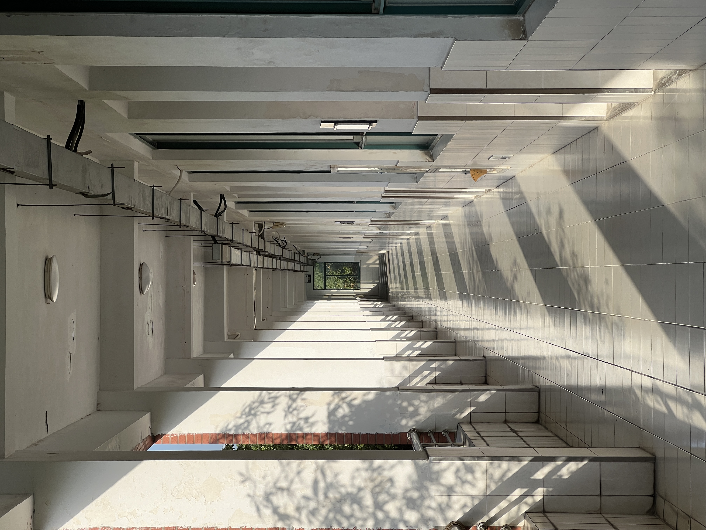
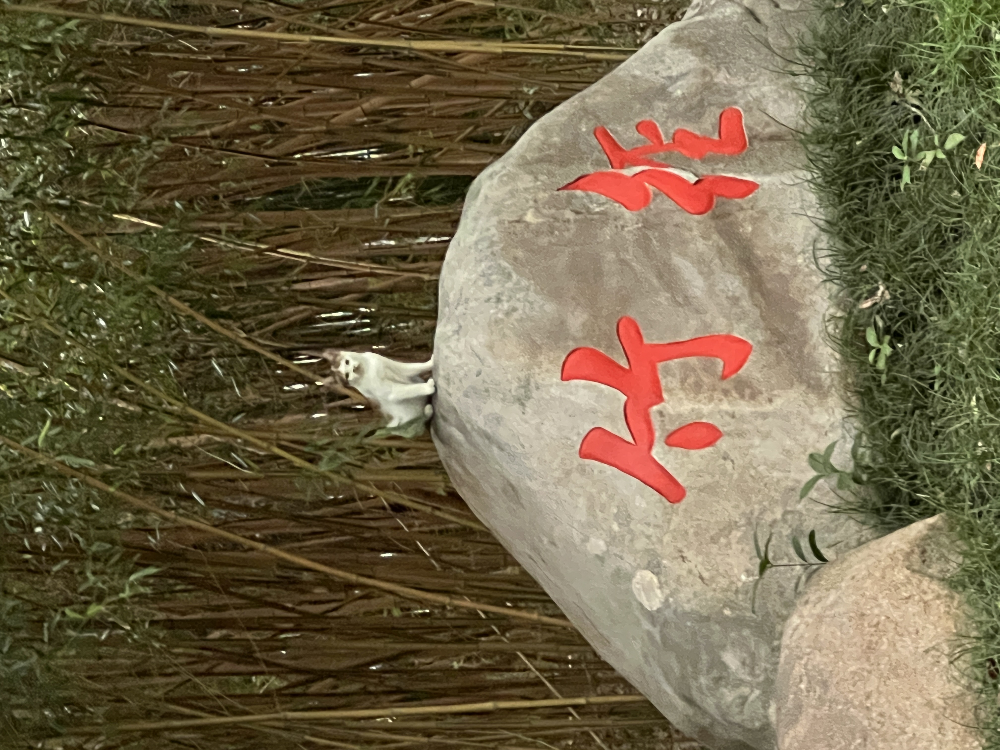
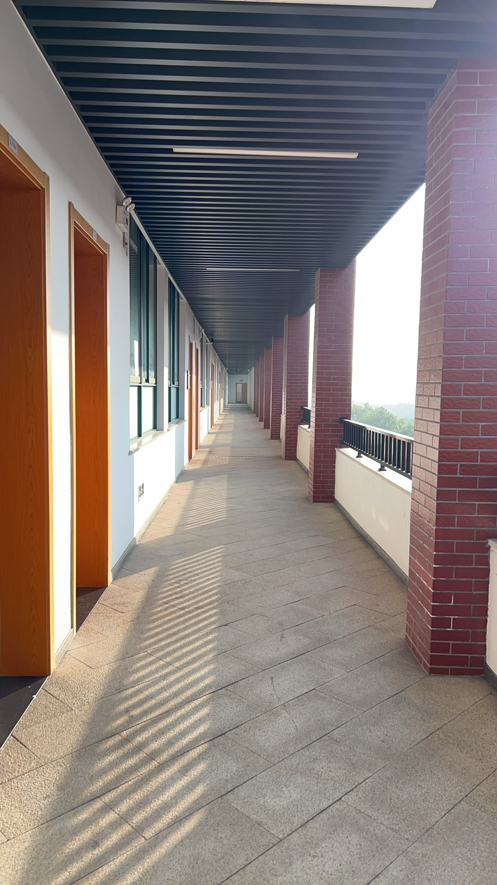
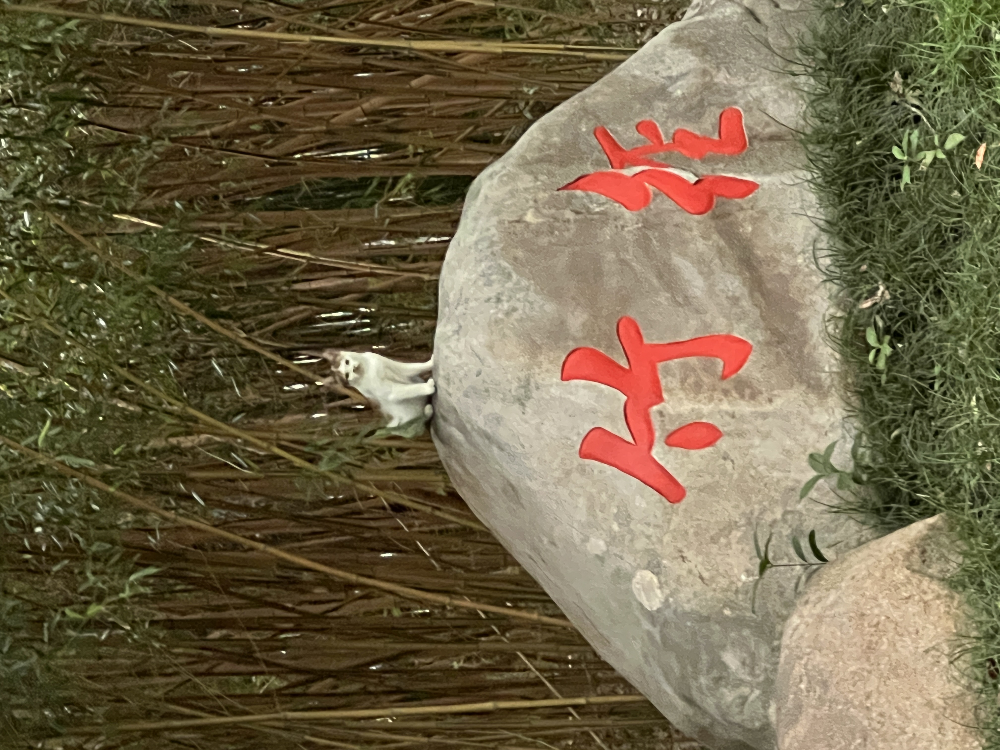
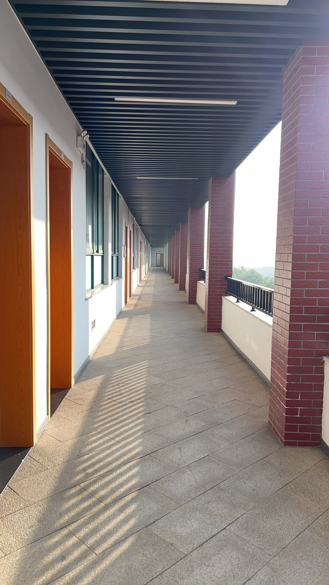

上海杉达学院
上海杉达学院（Sanda University）位于上海市，是经中华人民共和国教育部批准成立的民办全日制普通高等学校，入选教育部数据中国“百校工程项目”试点院校、科学工作能力提升计划（百千万工程）首批试点院校、上海市实施现代大学制度建设首批试点高校、上海市新增硕士学位授予单位立项建设单位、首批“大思政课”建设重点试验高校，为应用技术大学（学院）联盟成员单位、全国非营利性民办高校联盟、全国民办高校思政课建设联盟发起及成员单位。 上海杉达学院是在上海浦东开发开放的背景下，于1992年6月由上海交通大学、北京大学、清华大学部分教授发起创办的全日制民办大学。1992年8月，经上海市高等教育局批准筹办，校名为“杉达大学”，并于当年秋季面向全国招生；1994年2月，经国家教育委员会批准正式建校；2002年3月，经国家教育部批准设置为全日制普通本科院校，校名为“上海杉达学院”，是上海市第一所本科民办高校。2005年8月，经上海市学位委员会批准，增列为学士学位授予单位。2015年、2020年，先后通过教育部本科教学工作合格和审核评估。2017年纳入上海市教委硕士点培育单位。 截至2023年11月，学校建有上海浦东、浙江嘉善两个校区，总占地面积808亩，校舍总建筑面积36万平方米，
 


